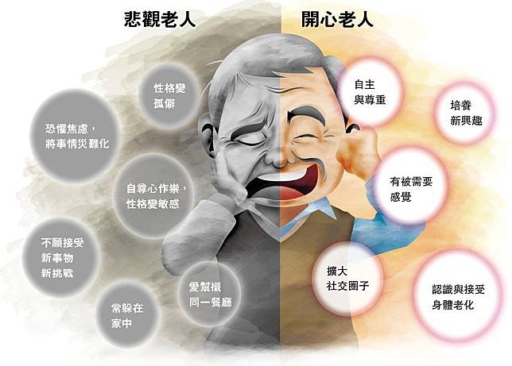

總有一天，我們都會變老
(current)
陪伴照顧長者
從容面對老年
別怕變老
活到老學到老
人老心不老
健康老年生活
生活有目標
保持社交
良好生活型態
隨著醫療、科技等等的進步，
現代人的平均壽命和過往相比明顯高出許多。
我們花了大把的時間學習成長，學著如何做一個大人，
但面對「老病死」，我們學習的時間總是被壓縮得太過緊迫。
以放牛吃草的方式步入老年，還沒學習該如何好好當個「老人」，在時間的摧殘下，痛苦地活著，終也成了子女的負擔。
張曼娟說：「陪伴父母的老去，就是預習自己的老。」
面對高齡化社會所帶來的問題，
學會和長者相處與當個老人都是我們需要去學習的！
Previous
Next
陪伴照顧長者

圖片來源：明報製圖
在照顧長者時，除了注意他們的身體健康外其實心理健康更是重要。長輩最需要的其實是我們的陪伴。多花些時間陪他們，能更了解他們真正想要的是什麼。人是社會動物，會渴望從他人身上得到認同，特別是老年人。和長者相處時，讓他們有「被需要的感覺」是很重要的。當老年人有被需要的感覺時，較不容易產生自我否定、價值感缺失，可以說是老人建立信心的基礎。
從容面對老年
許多人一提到老人，就會有一些既定的刻板印象。「老年歧視」使人們想到老就容易聯想到「病痛」、「失智」、「牙齒不好」、「與社會脫節」等等，造成許多人對「老」，抱持著負面的看法。但其實我們可以試著提早為我們的老年生活做準備，讓自己在這段老年旅程中，活出另一種精彩！
別怕變老
只要是人一定都會變老，保持正面的態度從容面對慢慢變老的自己。在年輕時多為自己儲備「精神老本」與「經濟老本」，提早為老年生活做準備可以減少面對未來的不安感。與其害怕變老，不如學著享受變老！孩童時期有孩童時期的快樂；青春有青春的美好；老年也會有老年獨有的幸福。
圖片來源：醫聯網
活到老學到老
為了落實終身教育，台灣許多地區均有「樂齡學習中心」、「社區大學」等機構。隨著社會的進步，只要有心，想要學習不再是一件難事。學習能使我們大腦保持年輕和活力，隨時給大腦新的刺激，能避免記憶力衰退等問題。
人老心不老
「自覺年輕」的心態，能讓我們人老心不老。一項研究指出一個人的主觀年齡跟實際身心狀況有著緊密的關聯。覺得自己比實際年齡年輕的人，較不會故步自封，神經退化程度也會跟著減緩。願意相信自己還年輕的人，更能好好享受旅途中的萬千風景。
健康老年生活
2020年2月4號《美國醫學》期刊中有一篇論文：〈21世紀的長壽處方〉，引用醫學文獻，提出健康老年的三要素。「生活有目標」、「保持社交」可以使我們精神與心靈上有所寄託能抱保持健康；擁有「良好的生活型態」能使我們身體更加勇健。健康是我們最大的財富，無論是身、心的健康都很重要！
生活有目標
目標可大可小，可以是擔任志工幫助他人；可以是學習一項興趣或技能成就自己；也可以是在家含飴弄孫替子女顧孩子。有目標的生活，可以使我們活得更有意義與價值。
圖片來源：佈老志工服務
.圖片來源：xw.qq.com
保持社交
人是群居動物，我們透過與他人的互動相處，取得歸屬感，能使自己不覺孤單、減少憂鬱。有研究顯示社交有助於紓解精神壓力！一些依興趣或需要所加的社團或是社區活動的參加，都是很好的社交活動。
圖片來源：CADENZA
良好生活型態
不抽菸、少熬夜、飲酒不過量、飲食規律、多運動、多動腦、睡眠充足等都屬於良好的生活型態，也是健康的基礎！有一個健康的身體，可以讓我們做許多我們想做的事，也能使我們活得更加輕鬆。
圖片來源：康健
圖片來源：健康日記 Healthy Diary
圖片來源：自由時報